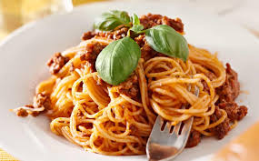

Ensalada César
Ingredientes:
- Lechuga romana
- Crutones
- Pechuga de pollo cocida y cortada en tiras
- Queso parmesano rallado
- Aderezo César
Preparación:
- Lava y corta la lechuga en trozos.
- Mezcla la lechuga con los crutones, la pechuga de pollo y el queso parmesano.
- Agrega el aderezo César y mezcla bien.
- Sirve frío y disfruta. 
- 500g de spaghetti
- 400g de carne molida
- 1 cebolla picada
- 2 dientes de ajo picados
- 1 lata de tomates pelados
- 1 zanahoria rallada
- Sal y pimienta al gusto
- Queso parmesano rallado para servir
- Cocina los spaghetti según las instrucciones del paquete.
- En una sartén grande, saltea la cebolla y el ajo hasta que estén dorados. Agrega la carne molida y cocina hasta que esté dorada.
- Agrega los tomates pelados y la zanahoria rallada. Cocina a fuego lento durante 30 minutos, revolviendo ocasionalmente.
- Sirve los spaghetti con la salsa Boloñesa y espolvorea queso parmesano rallado encima.
Spaghetti a la Boloñesa
Ingredientes:
Preparación: